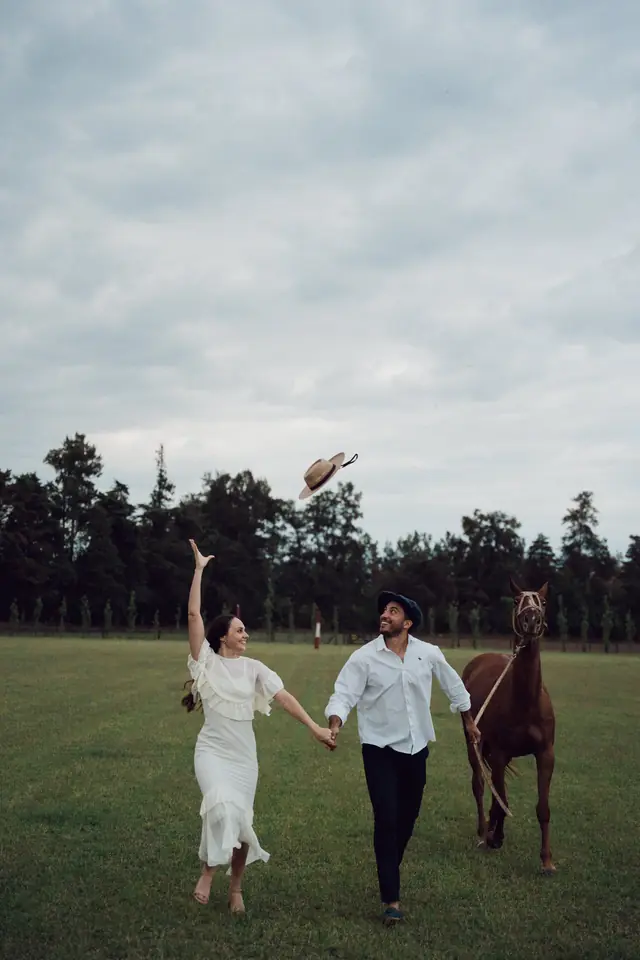

Traslado
Pendiente: Dolores y Mauro están definiendo si habrá traslado. No publicamos recorridos ni horarios sin confirmar.
SábadoAbril 2027
Faltan — días
¡Nos casamos!
Y queremos que seas parte de este día
Acá va su historia, contada con sus palabras.
Sábado 3 de abril de 2027
Para ver los horarios, abrí la invitación desde el enlace que te enviaron.
Agendá el día con sus horarios y lugares.
Elegante sport
Algo lindo y cómodo para disfrutar el día de principio a fin.
Dolores y Mauro
Información útil para invitados
Pendiente: Dolores y Mauro están definiendo si habrá traslado. No publicamos recorridos ni horarios sin confirmar.
Pendiente: recomendaciones de los anfitriones, si las hay.
Pendiente: indicaciones y links verificados.
R.S.V.P.
Una sola respuesta por familia o grupo.
Playlist
Sumá a la playlist del casamiento las canciones que te gustaría escuchar ese día.
Pendiente: enlace de colaboración vigente (Spotify: vale 7 días) y, si se quiere, el de escucha.
